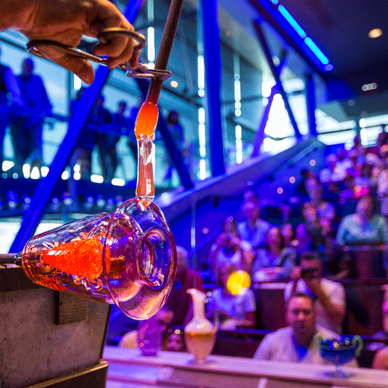
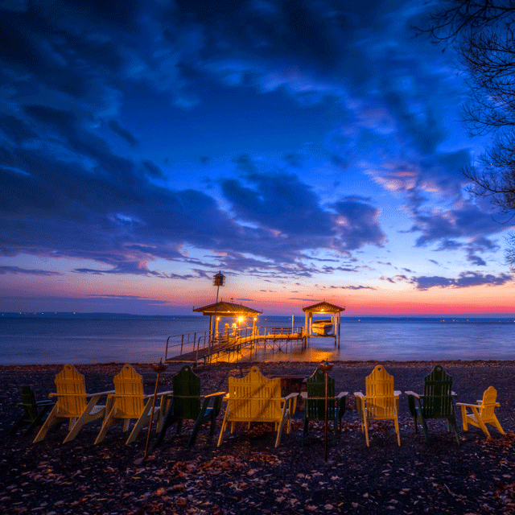
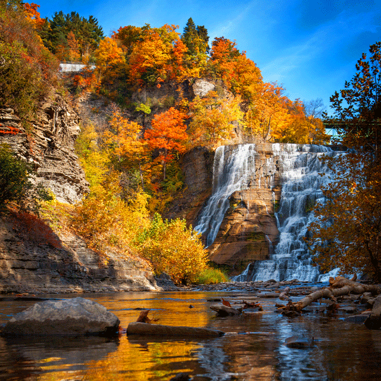

Why Visit the Southern Tier?
Whether you're looking for festivals, hiking, museums, or a nice getaway in a lakeside home, the Southern Tier of NY has everything a visitor could need to enjoy their time. The region is know for its wineries along the Finger Lakes, but distilleries and breweries are taking over for those with differing tastes.
Corning

Visit the Corning Museum of Glass, where you can experience a glass-breaking demonstration, professionals giving live glass blowing demostrations, or make your glass creation. If you're looking for a more low-key activity, the Rockwell Museum offers several floors of Western Art as well as a rotating schedule of artwork by guest artists. Be sure to stop by in May for the annual Glass Fest, which brings thousands each year to enjoy the local food, crafts, music, and end the day with fireworks.
Watkins Glen

Home of Watkins Glen International, Seneca Lake, and the popular Watkins Glen Gorge Trail, you won't find yourself short of options to entertain you, your friends, and your family. Starting in April, experience the excitement at the racetrack when Nascar comes to visit. Take a day to visit the winieries, distilleries, and breweries along the east and west coasts of the lake. A day would be lost without hiking along the Gorge Trail and witnessing the history of its creation.
Ithaca

A trip to the Southern Tier wouldn't be complete without a tour of Ithaca. Drive to Cornell University where you can view the art collections from all over the world and throughout the centuries at the Johnson Museum of Art. If you're interested in a nature excursion, pick one of many local State Parks: Robert Tremain State Park, Buttermilk Falls State Park, Taughannock Falls State Park. Fall is also a beautiful time to see the colors change in the valley and to experience the annual Apple Fest!